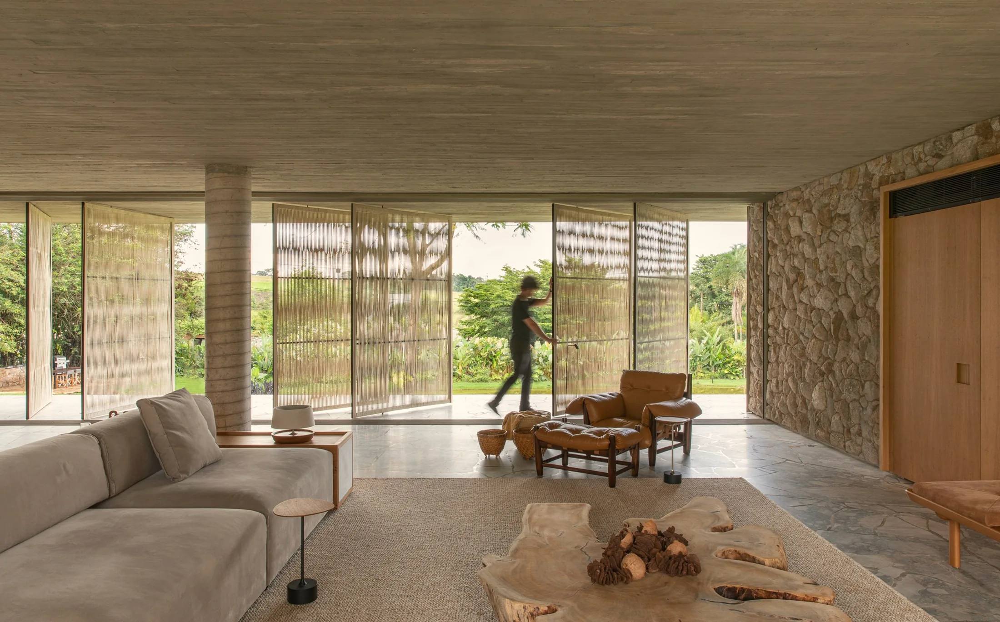
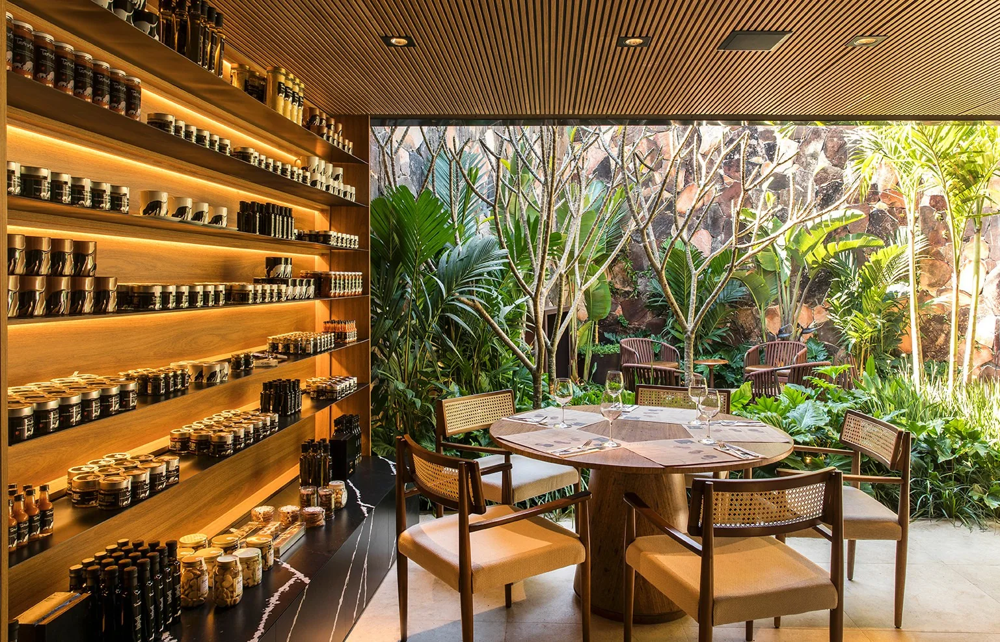

Casas que acolhem diferentes formas de viver. Luz, paisagem e materiais naturais fazem parte do desenho desde o início.
Arquitetura + interiores
Arquitetura que aproxima.
De dentro para fora.

Nosso trabalho
Projetos
Diferentes lugares.
O mesmo cuidado em cada detalhe.
O escritório · Franca, São Paulo
Dois olhares.
Dois olhares.
Um mesmo traço.
Aproximar.
Integrar.
Habitar.
A integração do interior com o exterior, as linhas retas e a brasilidade dos materiais orientam a arquitetura do mf+arquitetos.
Mariana Garcia Oliveira e Filipi Oliveira se conheceram no primeiro ano da faculdade de Arquitetura e Urbanismo. Formados em 2009, casaram-se e fundaram o escritório em Franca, no interior de São Paulo.
Em 2015, uma reestruturação trouxe o nome atual. O escritório atua em projetos residenciais, comerciais, industriais e de interiores.
Mariana Garcia OliveiraArquiteta e urbanista
Filipi OliveiraArquiteto e urbanista
Nossa atuaçãoDo primeiro traço ao espaço vivido
O mesmo olhar.
Novas escalas.
Arquitetura e interiores pensados em conjunto, respeitando o lugar e as pessoas que vão ocupá-lo.
Espaços de encontro, trabalho e convivência, com atenção à experiência de quem chega e de quem permanece.

Função e forma na escala da produção. Fluxos, estrutura e implantação orientam as decisões do projeto.
Texturas, luz e mobiliário se encontram em ambientes que convidam a ficar. Cada detalhe participa do todo.
PrincípiosO que orienta o nosso olhar
Interior + exterior
Espaços que se abrem para a paisagem e trazem a natureza para o cotidiano.
Pureza formal
Linhas claras, proporção e a força dos elementos essenciais.
Matéria brasileira
Pedra, concreto, madeira e texturas que tornam cada ambiente singular.
Contato
Vamos pensar no
Vamos pensar no
seu próximo espaço.
Uma ideia, um terreno, uma nova fase.
Conte o que você
imagina. A gente começa por aí.
mf+arquitetos
Estamos
Estamos
por aqui.
Telefone16 98821-102016 99277-1990
Endereço
Rua Flora Barbosa Sandoval, 5171
Santa Adélia · Franca,
SP
CEP 14409-032
Instagram@mfmaisarquitetos ↗